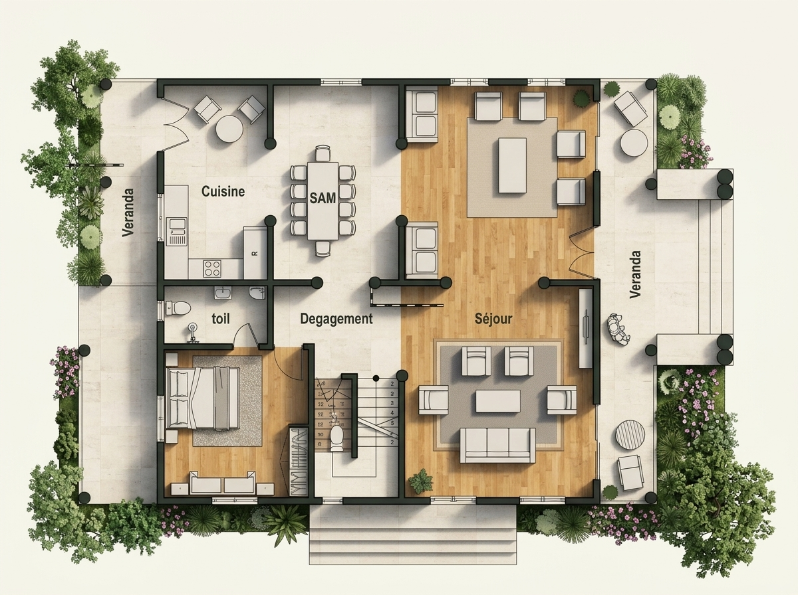
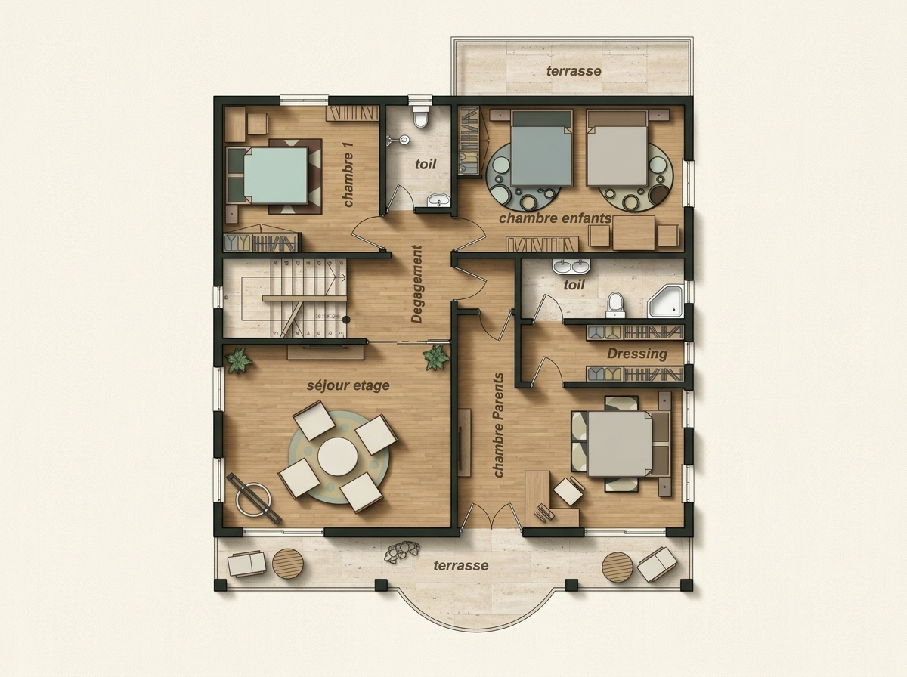
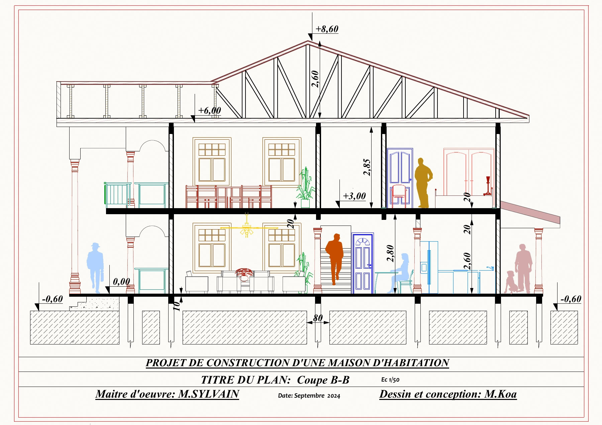
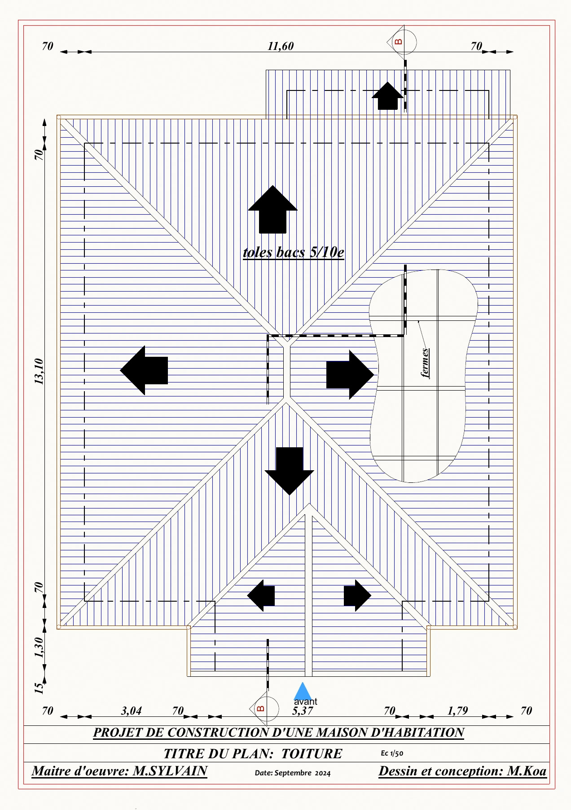
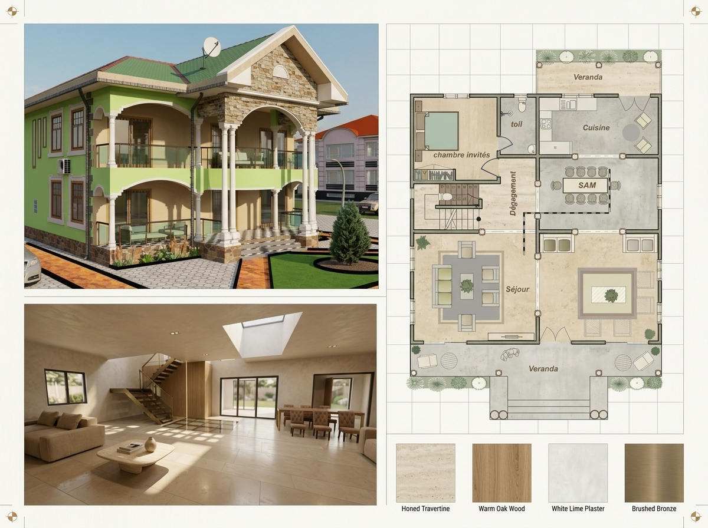
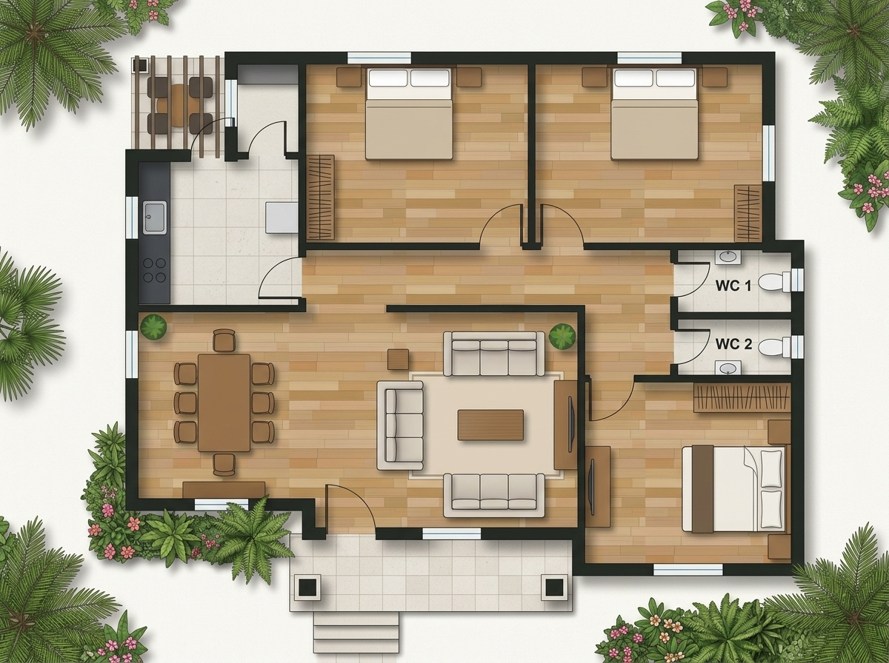
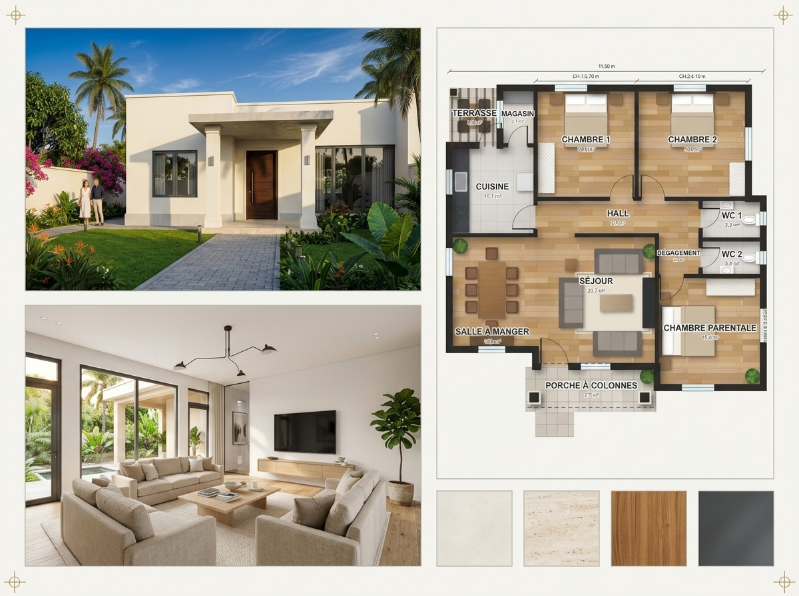

Le cockpit architectural immersif
Du trait
à l’espace.
Plans cotés, maquette 3D, ambiances et dossiers d’agence : chaque projet de l’atelier se dessine, se visite et se décide ici.
- Plans cotés
- Maquette 3D
- Ambiances IA
- Dossiers A3
- Films HD







▶ Lire le film HD